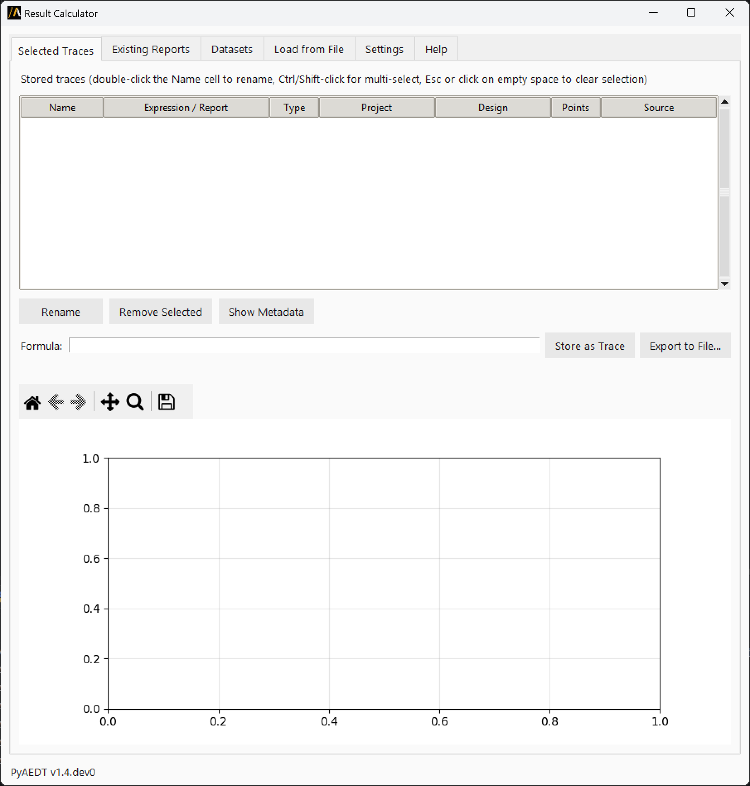
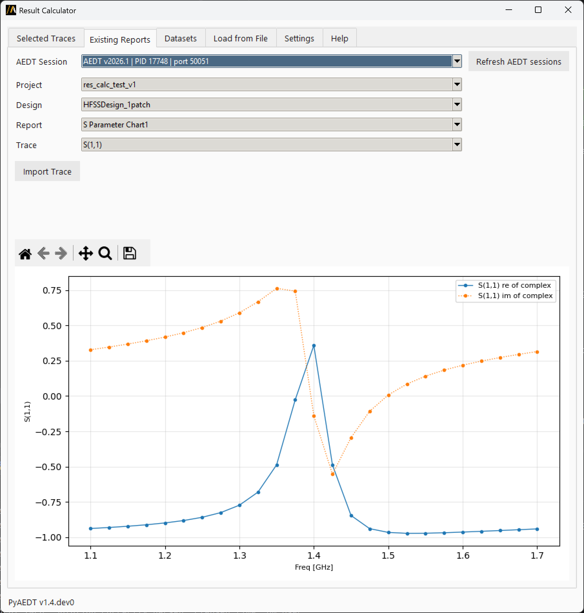
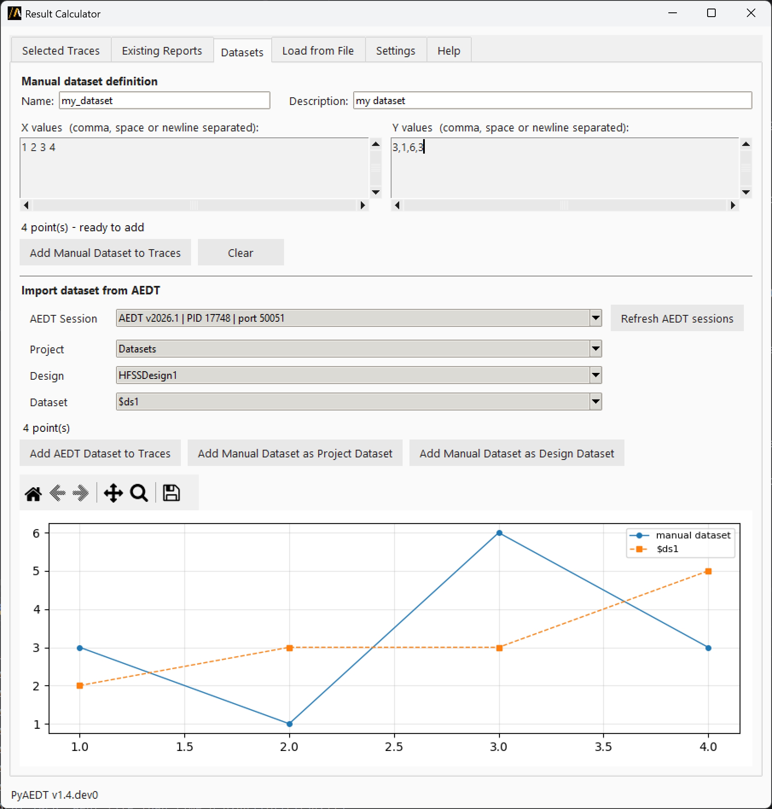
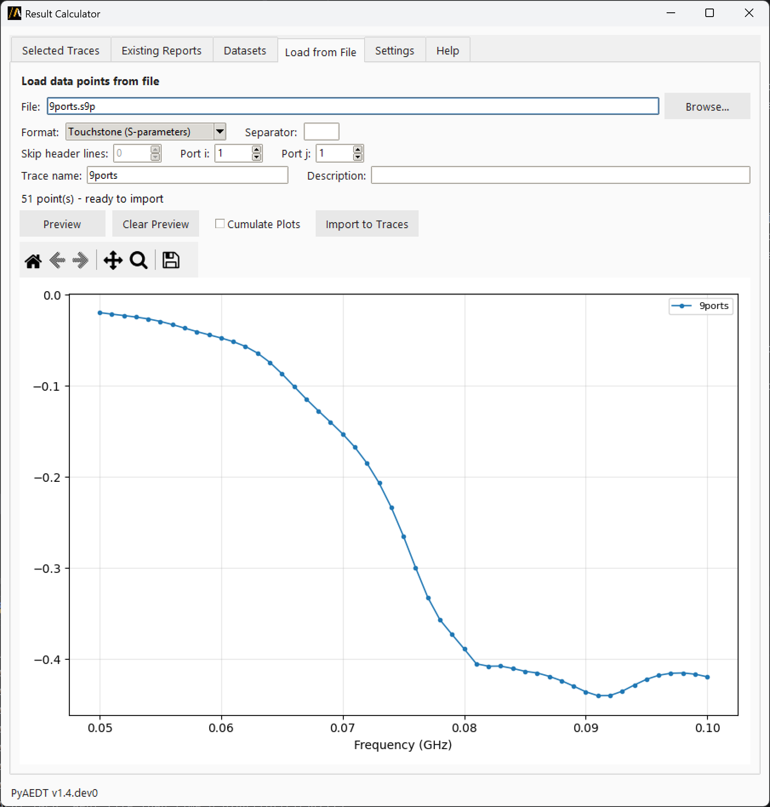
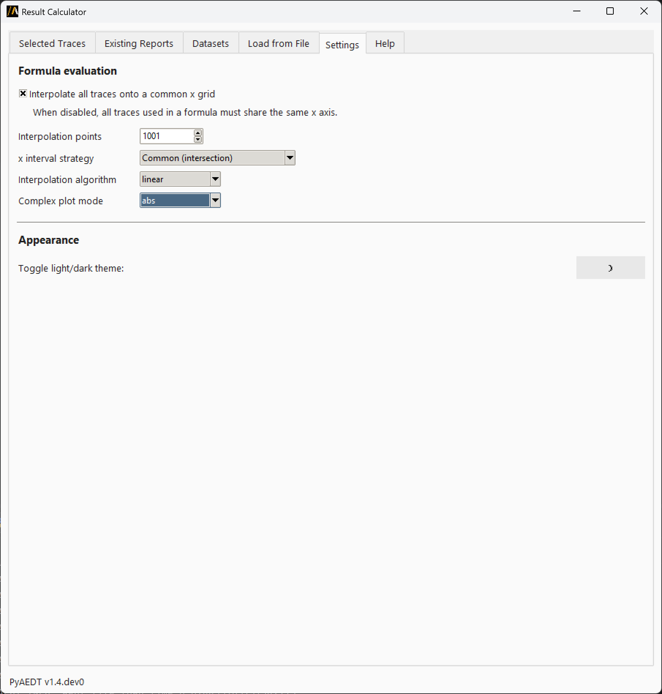

Result Calculator#
The Result Calculator extension allows you to collect, plot, and manage result traces from one or more AEDT sessions. You can import traces from existing reports, load datasets, read from files, and perform mathematical calculations over traces with support for complex values and different x-axis grids.
Overview#
This extension provides a comprehensive GUI for:
Importing traces from AEDT reports and datasets
Managing traces from multiple AEDT sessions simultaneously
Performing calculations using mathematical formulas with support for complex numbers
Exporting results to multiple file formats (CSV, TSV, JSON, NPZ, TXT)
Plotting and visualizing data with interactive plots
Creating and loading datasets by manual entry or directly from AEDT
Loading external data from various file formats including Touchstone files
Main tabs#
Selected traces#
{kind=link}

This tab displays all imported or calculated traces. You can:
Select one or more rows to plot them together (Ctrl+click or Shift+click for multi-selection, click on an empty area to deselect all)
Double-click a trace name to rename it inline
Enter mathematical expressions in the formula bar (formulas are validated in real-time)
View live formula results as you type
Store calculated results as new permanent traces (named
ans1,ans2, etc.)Export formula results to file in multiple formats
Supported file formats for export:
CSV (.csv): Comma-separated values, two columns (x and y)
TSV (.tsv): Tab-delimited, two columns (x and y)
JSON (.json): x and y as lists, plus formula metadata
NumPy archive (.npz): Binary NumPy format
NumPy text (.txt): Plain-text two-column NumPy format
Formula capabilities:
Use trace names as variables (for example,
result_1 - result_2,20*log10(abs(R)))Mix real and complex traces in calculations
Access NumPy functions:
log10(),abs(),sqrt(),sin(),cos(), etc.Use mathematical constants:
pi,e,inf,nanReference NumPy directly with
np.prefix for advanced operationsThe calculation engine does not verify whether operations are dimensionally or physically meaningful.
Supported data types:
2D traces (x/y pairs) with real or complex values
3D traces are not supported
Existing reports#
{kind=link}

Browse and import traces from reports already open in AEDT sessions. This tab allows you to:
Select an AEDT session from the dropdown
Navigate through projects, designs, and reports
Choose specific traces to preview
Preview raw x/y data automatically (displayed in a chart below)
Click “Import Trace” to import the selected traces into the Selected Traces tab
The preview chart loads automatically once a trace is selected, showing exactly what is imported.
Datasets#
{kind=link}

This tab has two sections:
Manual entry section:
Enter x and y values directly in text boxes (space or comma-separated)
Define a name and an optional description for the dataset
Click “Add Manual Dataset to Traces” to import the defined dataset in Selected Traces
Click “Clear” to reset the input fields
The imported dataset becomes available for use in calculations tab
AEDT datasets section:
Browse 2D datasets defined in AEDT projects (supports both project and design datasets)
Select a dataset and click “Import Dataset” to add it to Selected Traces
Click “Add Manual Dataset as Project Dataset” or “Add Manual Dataset as Design Dataset” to push a manually defined dataset into the selected AEDT project or design
Load from file#
{kind=link}

Import data from disk files in supported formats:
CSV files: Comma-separated values
Tab-separated files: TSV format
Custom separator: Specify any character as separator
Touchstone files (.sNp): Network parameter data
Other text files: With configurable parsing options
Features:
Browse and select files from disk
Configure parsing options:
delimiter (comma, tab, space, or custom)
header rows to skip
columns to read (x and y)
for Touchstone files, specify the S-parameter index
Click “Preview” to plot parsed data before importing
Click “Clear Preview” to reset the preview plot (selecting a new file automatically clears the preview)
Click “Cumulate Plots” to overlay multiple columns/ports selection in the preview chart
Click “Import to Traces” to import the selected data directly in Selected Traces
Settings#
{kind=link}

Settings tab allows you to configure how the extension handles data and displays information.
Interpolation settings:
Configure how the formula evaluator handles traces with different x-axis grids:
Interpolate all traces onto a common x grid: Align traces to a common x-axis grid (recommended for formulas)
Interpolation points: Resolution of the output interpolation grid (default: 301)
x interval strategy, choose between:
"common"(default): Use the intersection of all x-axis ranges"extended": Use the union and extrapolate missing data
Interpolation algorithm, choose between:
"linear"(default): Fast and smooth"quadratic": Higher accuracy"cubic": Highest accuracy"nearest": Step function
Complex plot mode, chose how to display complex data in plots:
"abs": Magnitude (default)"abs + phase": Magnitude and Phase angle in degrees"real + imag": Real and imaginary parts
UI settings:
Switch between light and dark themes
View PyAEDT version information
Help#
Built-in help with:
Quick reference for all tabs
Trace naming conventions
Tips for using the extension
Code examples for reloading exported files in Python
Working with AEDT sessions#
Session dropdown:
The AEDT Session dropdown at the top of the Existing Reports and in Datasets tabs selects which running AEDT instance to read from. This extension allows you to work with multiple AEDT instances simultaneously. The extension supports graphical and non-graphical sessions, as well as student versions. All data is cached locally to speed up browsing and importing traces.
Refresh AEDT sessions:
Click “Refresh AEDT sessions” to detect newly opened instances or clear stale session data from the cache. Imported traces are stored in the extension and are not affected by session refreshes.
Session information:
The dropdown shows:
AEDT version
Process ID (PID)
Network port
Student version indicator
Non-graphical mode indicator
Current process indicator
Trace naming#
Trace names follow these conventions:
Valid characters: Letters, digits, and underscores only
Imported traces: Named
result_1,result_2, etc.Formula results: Named
ans1,ans2, etc.Renaming: Double-click any trace name in the table to rename it inline
Tips and tricks#
Quick Help: Press
F1from anywhere to jump to the Help tabDeselect all: Click the empty area below the trace table to deselect all traces and view only the live formula curve
Chart toolbar: Use the toolbar below each chart for zoom, pan, and save-image controls
Reload NumPy binary:
d = np.load('file.npz'); x, y = d['x'], d['y']Reload NumPy text:
data = np.loadtxt('file.txt'); x, y = data[:, 0], data[:, 1]
Complex numbers#
The extension supports traces with complex values:
Formulas can mix real and complex traces
In the Selected Traces tab, a dropdown allows you to choose how to display complex results
Troubleshooting#
No AEDT session available:
Make sure at least one AEDT instance is running before trying to import reports or datasets. Click “Refresh AEDT sessions” to detect newly opened instances.
Trace import fails:
Verify the design and report are available in the selected AEDT session
Try refreshing the session list
Check that the report contains at least one trace with x/y data
Formula evaluation errors:
Verify trace names are spelled correctly (case-sensitive)
Ensure traces have compatible x-axis ranges for interpolation
Check that mathematical operations are valid (for example, avoid division by zero)
Adjust interpolation settings if traces have very different x-axis ranges
File import issues:
Verify file format matches the selected import options
Check that CSV/TSV files have at least two columns (x and y)
For Touchstone files, verify the file format (.s1p, .s2p, etc.)
Use the Preview feature to diagnose parsing issues
API usage example#
The extension is launched from AEDT using PyAEDT Extension Manager. The extension can also be used standalone from the command line:
python result_calculator.py
Alternatively, you can import and launch it programmatically:
import tkinter
from ansys.aedt.core.extensions.common.result_calculator import (
ResultCalculatorExtension,
)
# Create and display the extension
ext = ResultCalculatorExtension(withdraw=False)
# Keep the window alive
tkinter.mainloop()
Note:
When launched standalone, the extension can still connect to any running AEDT session via the Session dropdown, allowing you to import reports and datasets from multiple AEDT instances.
The extension cannot be used programmatically to import traces from AEDT sessions or perform calculations without the GUI.